| 日付 | 2013年11月23日（土） |
|---|---|
| 山域 | 奥秩父 |
| メンバー | 家族（妻、長女・2歳、長男・0歳） |
| 山行形態 | 子連れ日帰り |
| アクセス | 車、ロープウェイ |
| ルート (Map) | 昇仙峡グリーンライン駐車場 (9:32) - (10:29) ロープウェイ仙娥滝駅 - (10:47) ロープウェイパノラマ台駅 - (11:05) 弥三郎岳 (11:34) - (12:12) ロープウェイパノラマ台駅 - (12:33) 白砂山 - (13:03) 白山展望台 - (14:15) ロープウェイパノラマ台駅 - (14:26) ロープウェイ仙娥滝駅 - (15:15) 昇仙峡グリーンライン駐車場 |
御岳昇仙峡は山梨を代表する観光地だ。
白い岩峰と渓谷が織り成す景観が素晴らしく、
紅葉のシーズンには多くの人が訪れる。
今年はこれまであまりきれいな紅葉を見られていなかったので、
紅葉狩りの最後のチャンスを逃すまいと
風邪気味の体を引きずり、昨日に引き続き山に向かう。
早朝に家を出て山梨に向かう。
御岳昇仙峡に向かう道から、すでに紅葉が美しい。
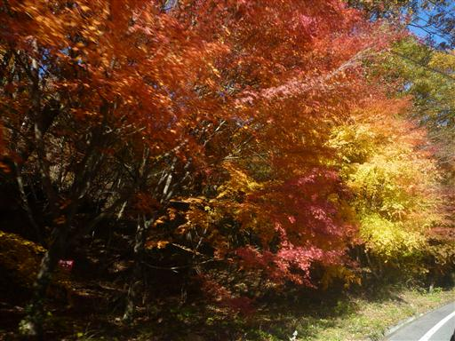
昇仙峡グリーンライン駐車場に到着。
白い岩肌が所々に見えている。駐車場からして絶景が広がる。
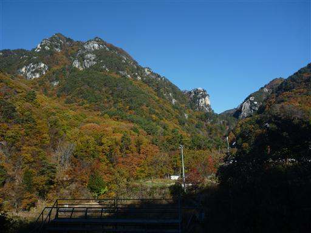
準備を整えたら車道を下って渓谷に向かう。
目の前に見えるトンネルは驚くほど壁面がでこぼこだ。
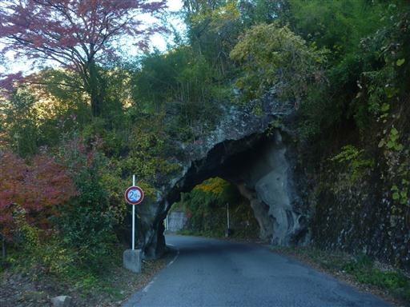
渓谷沿いの道に下りてくる。車道ではあるが通る車は少ない。
予想通り紅葉真っ盛りで、景色を眺めながらのんびりと歩く。

山道ではないため渋る娘を歩かせる。
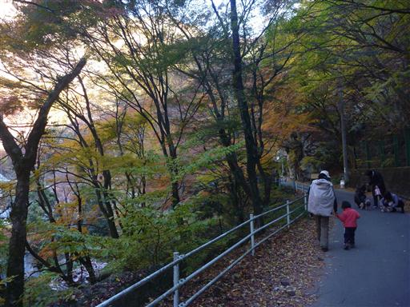
道から少し外れて川沿いに下りてみる。岩壁の中を激流が流れ下っている。
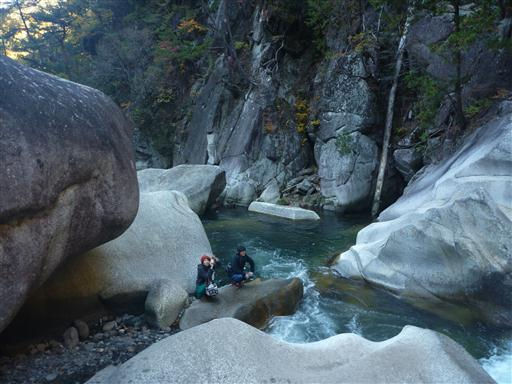
見上げると青空と白い岩壁がまぶしい。
左の尖峰が昇仙峡を代表する覚円峰だ。
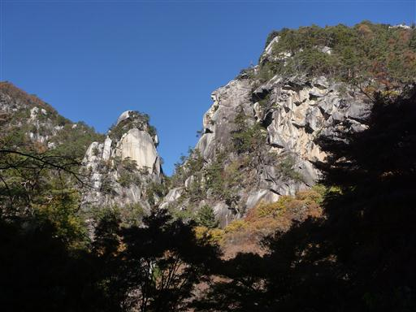
車道から遊歩道に入っていく。赤、黄色と紅葉が鮮やかだ。
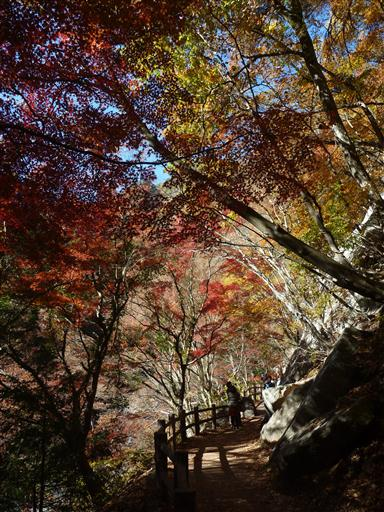
渓谷には巨大な石がたくさん散乱している。
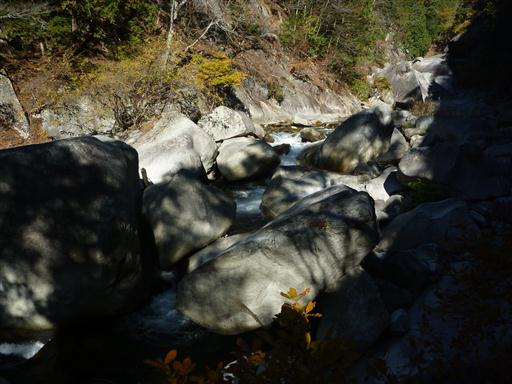
頭上には覚円峰。渓谷の石はここから落ちてきたものなのだろうか？
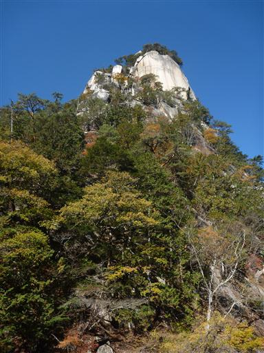
石門。巨大な岩の庇が門のようになっている。
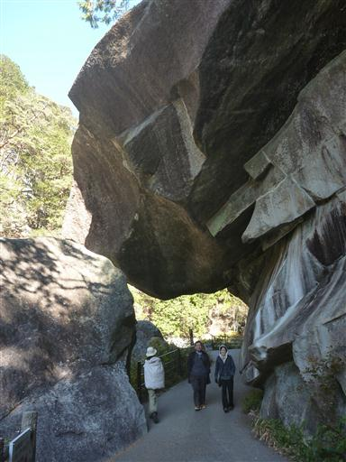
よくよく見ると、ほんの僅かに隙間が空いているため、完全な門にはなっていない。
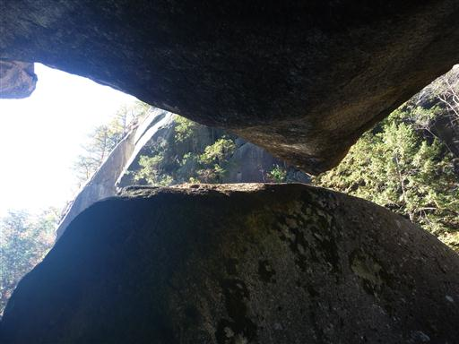
渓谷に架かる橋を渡る。
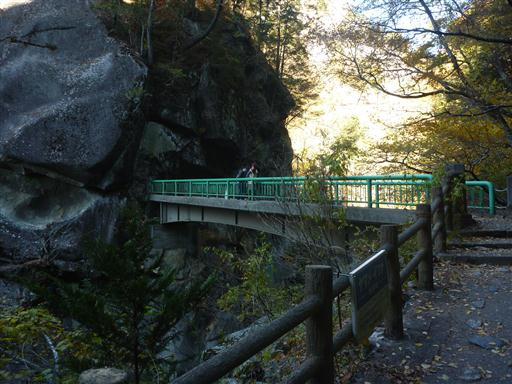
橋から望む昇仙峡。深く刻まれた渓谷は息をのむ美しさだ。
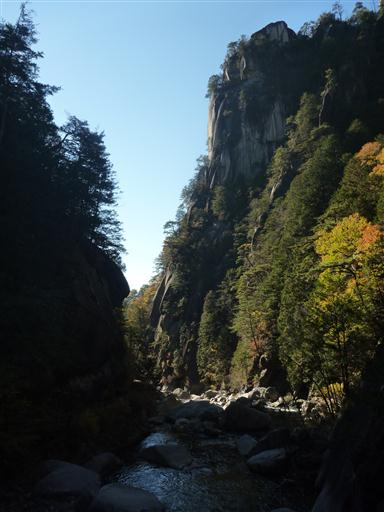
ここにも岩の庇がある。
岩の隙間には観光客が残していった一円玉が多数挟まっていて少し気持ち悪い。
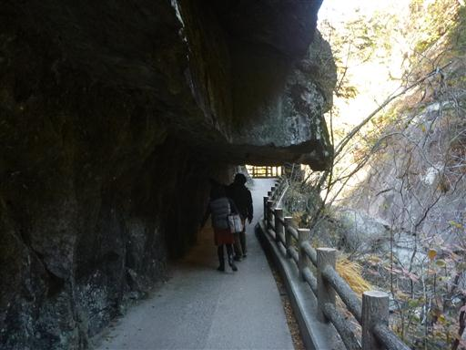
しばらく歩くと滝が見えてくる。陽の光を浴びて虹ができている。
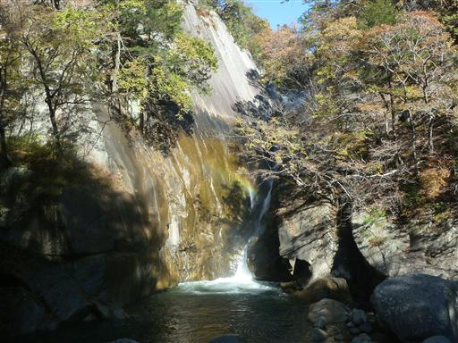
現れたのは仙娥滝。落差30mの美しい滝だ。
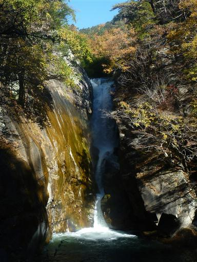
仙娥滝を過ぎると途端に観光客の数が多くなる。
この先にある駐車場に車やバスを停めて、仙娥滝まで往復する観光客が多いようだ。
昇仙峡の美しい渓谷美を見ずにここで引き返すのは惜しいと思うのだが…
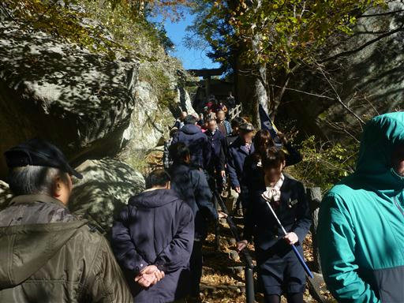
階段を登って鳥居を潜ると左手に昇玉堂が見えてくる。中に水晶玉が祀られている。
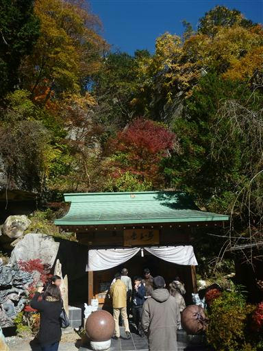
昇玉堂の側にある天幸五龍神。見事な木彫りの龍だ。
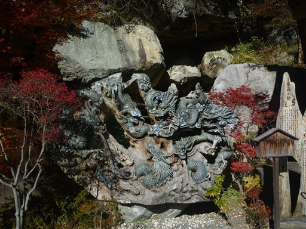
一大観光地のため多くの土産物屋が軒を連ねている。
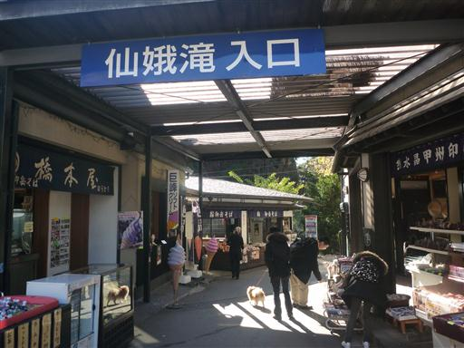
ここの土産物屋では水晶やアメジストなどの石がたくさん売られている。
この辺りで採れるようだ。
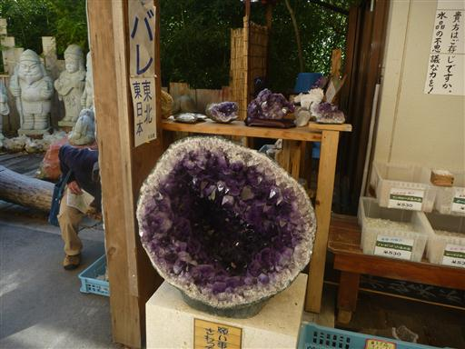
商店街を抜けると、ロープウェイの駅までしばらく車道を歩く。
右手に見えるのはごくごく平凡な川だ。
この川がこの先、仙娥滝を越えて昇仙峡の美しい渓谷を作るとは信じられない。
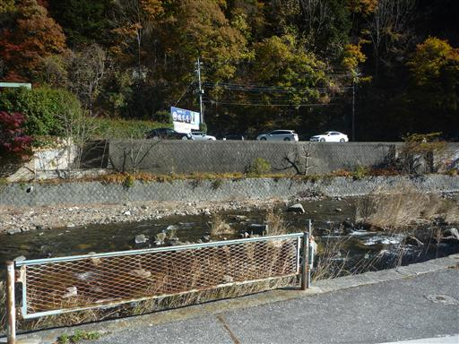
世界最大級の水晶原石と記載されている。確かに巨大な水晶の原石だ。
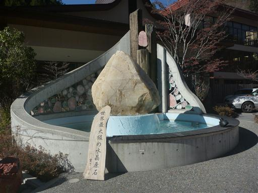
ロープウェイ乗り場に到着。この辺りは昭和の雰囲気が漂っている。
1964年開業なのでかなり古い施設だ。
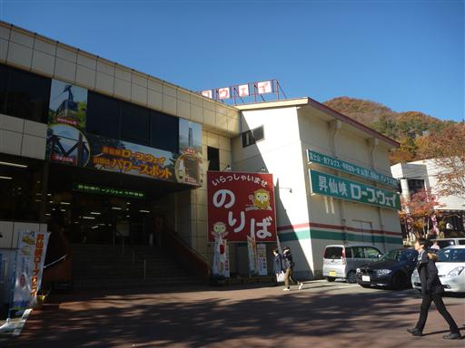
ロープウェイも年季が入っている。
娘はキャリアに乗りたいと言って聞かないため、キャリアに乗せて床に置く。
ぎゅうぎゅう詰めのロープウェイで視界が無くなり泣いていたが自業自得だ。
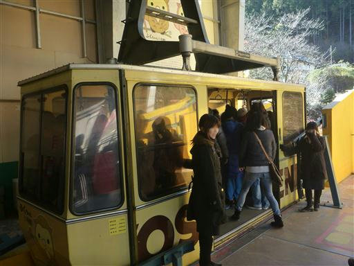
10分ほどでパノラマ台駅に到着する。駅付近に木でできた謎のすべり台がある。
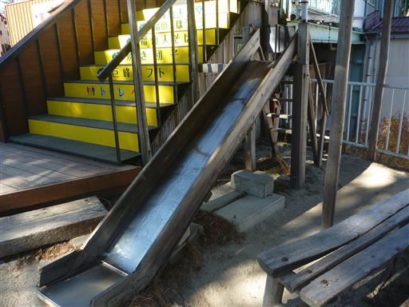
混雑するパノラマ台駅を早々に脱出し、弥三郎岳に向かう。
今日も娘は全く歩く気がないようだ。
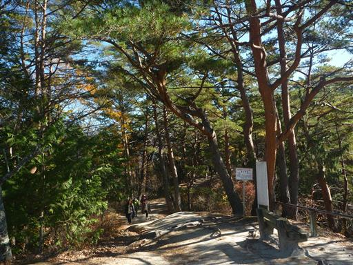
所々で展望が広がる。遠くに見える高い山は金峰山だ。
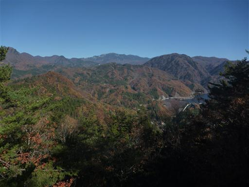
しばらく歩くと展望台が見えてきた。
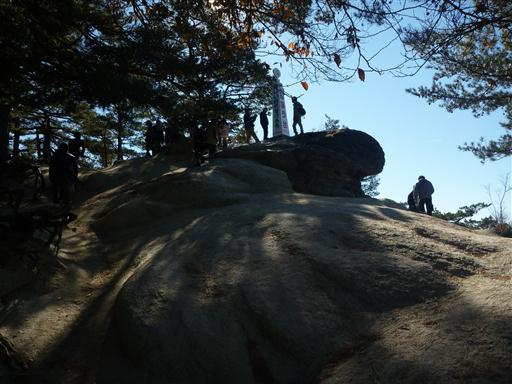
ここは南アルプスの展望台。雪に覆われた白いピークがいくつか見えている。
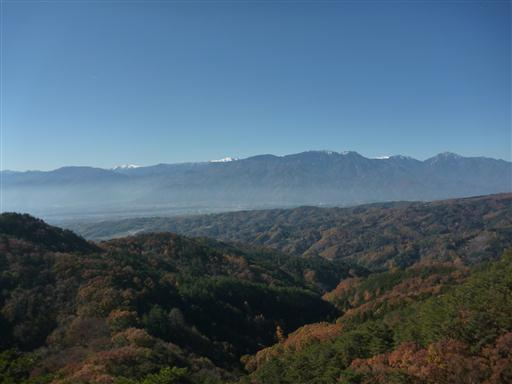
アンテナを付けた犬と何回かすれ違ったが、何者だろうか？

弥三郎岳までは岩がちな地形が続くが、観光客でも歩けるように完璧に整備されている。
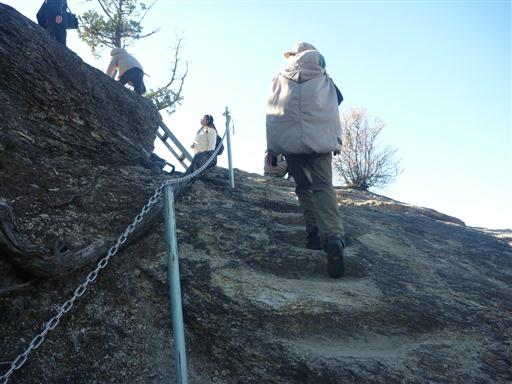
岩を削って作られた階段を登る。
大きな木が邪魔をして、子供を背負っているとかなり登りにくい。
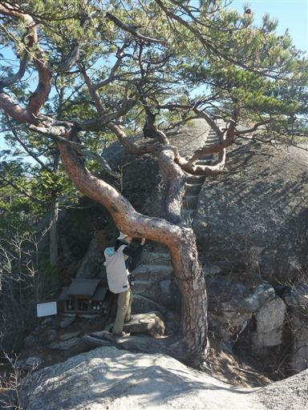
鎖につかまって岩峰の上に躍り出る。
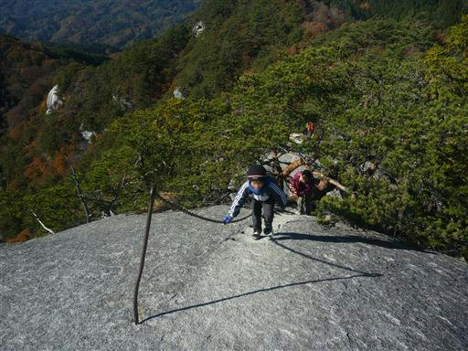
岩峰からは大きく展望が広がる。遠くに富士山が見えている。
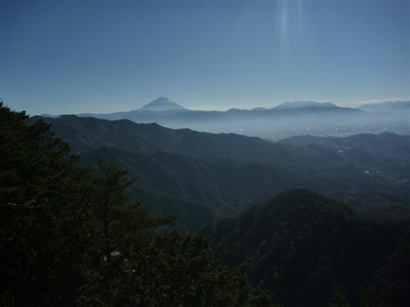
目の前にはこれから行く予定の白砂山が見えている。
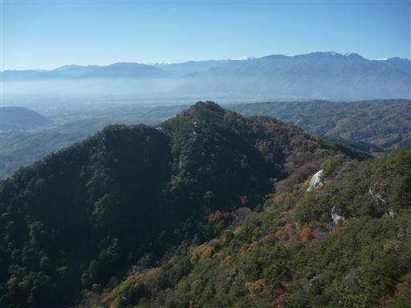
展望の良い岩峰から一登りで弥三郎岳山頂に到着する。標高1058m。
山頂には大量の小銭が置かれている。
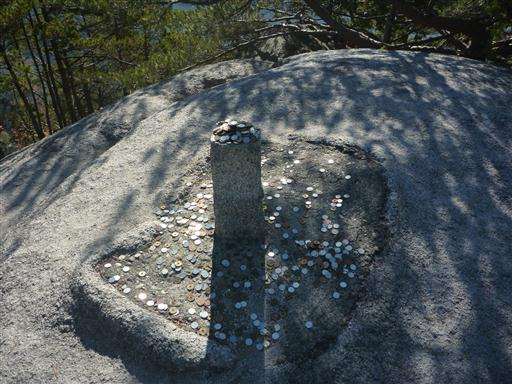
山頂は少し樹林に囲まれ展望が開けないため、多くの人は先ほどの岩峰に留まっている。
山頂は狭いため、岩を降りた安全なスペースに腰を下ろして昼食をとる。
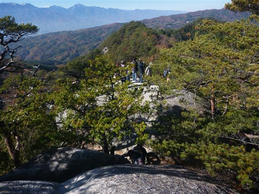
昼食をとったら元来た道を戻ってロープウェイパノラマ台駅まで戻ってくる。
駅近くには八雲神社が建てられている。
他にも展望台や鐘などがあり、観光客がたくさん集まっているのだが、
次なる目的地の白砂山へ続く道がなかなか見つからず右往左往してしまう。
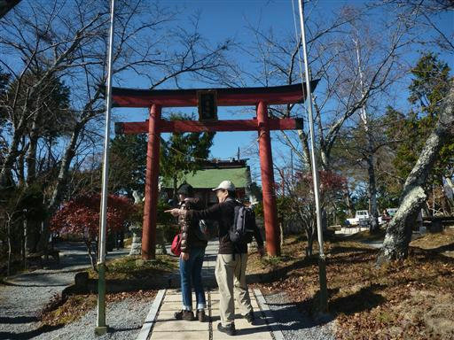
あちこち探して、ようやく白砂山に続く道を発見する。
入口付近に売店があり、その陰に隠れていたのでなかなか気づかなかった。
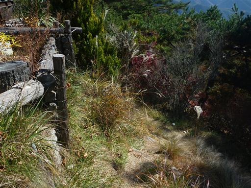
案内標識もあるが消えかかっている。こちらに足を延ばす人はほとんどいなさそうだ。

こちらに足を踏み入れると、とたんに人影がなくなる。
ほとんど終わりかけているが、この辺りも若干紅葉が残っている。
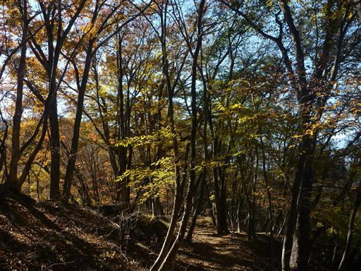
白砂山への分岐点に到着。メインロードを外れて白砂山に向かう。
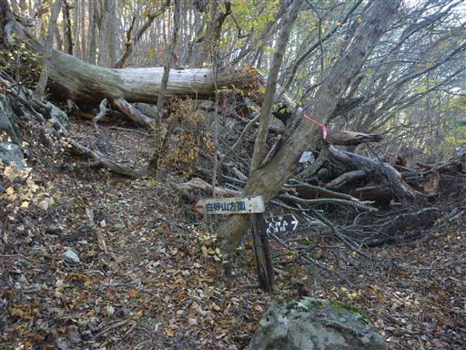
大きな木が倒れて道をふさいでいる。
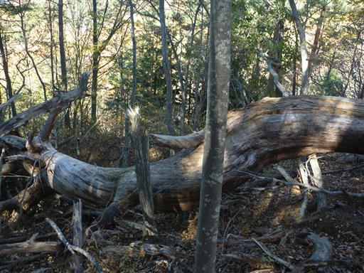
白砂山の山頂に到着する。弥三郎岳とよく似た雰囲気だが、こちらは無人で静かだ。
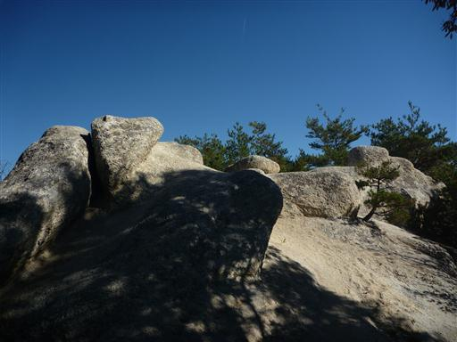
白砂山から弥三郎岳を望む。白い岩が非常に美しい。
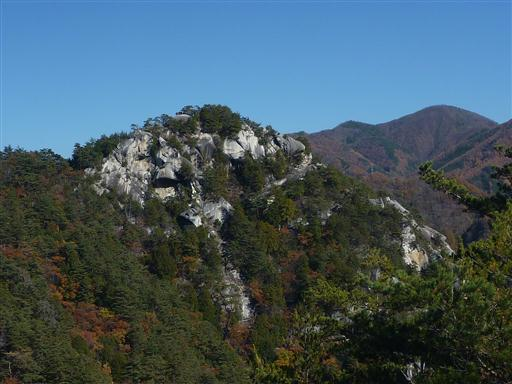
こちらの岩も変わった形をしている。
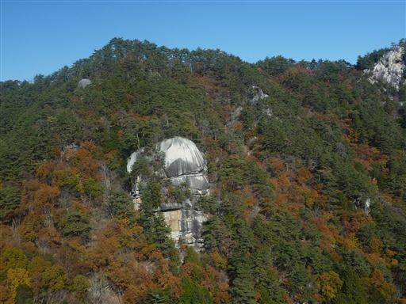
白砂山を後にし、次なる目的地・白山展望台に向かう。
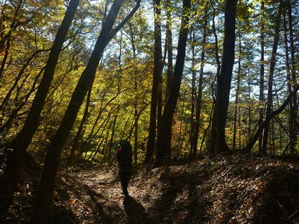
白山展望台に到着。目の前には南アルプスの展望が開ける。
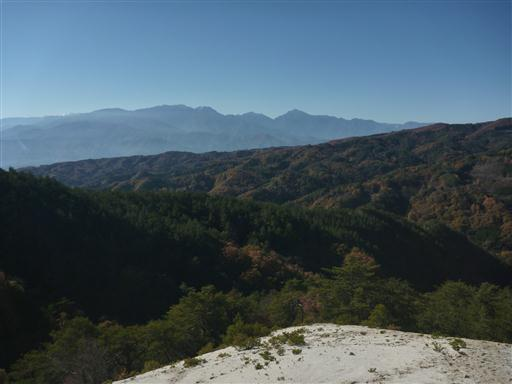
こちらは茅ヶ岳。ここから見る茅ヶ岳は非常に恰好良い。
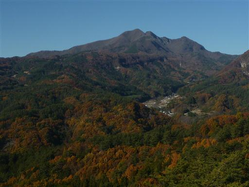
この辺りは白砂が一面に広がっていて非常に眩しい。
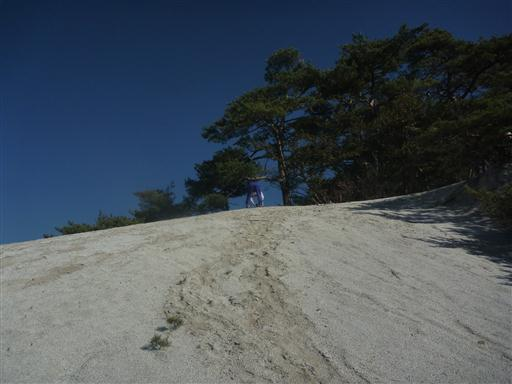
白砂の中に小さな松の木が点々と生えている。
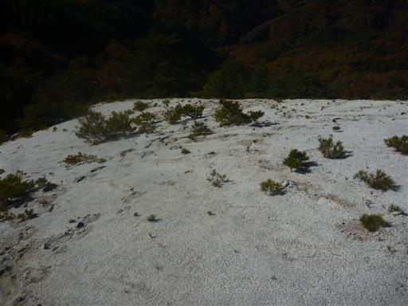
ここから先に進んでそのまま下山することもできるのだが、
行程が長くなるため元来た道を引き返すことにする。
ここに来てようやく娘がキャリアから降りて歩いてくれた。
足元にクルミの殻が落ちている。
ロープウェイパノラマ台駅に戻ってくる。相変わらずこの辺りは観光客が多い。
ロープウェイで下ったら、あとは駐車場まで遊歩道を歩いていく。
陽が当たって朝よりも紅葉がきれいに見えている。
これで恐らく今年の紅葉は見納めだ。
昇仙峡は少し観光客の数が多すぎたが、
奇岩、滝、紅葉、展望と素晴らしい景観が広がる観光地だった。